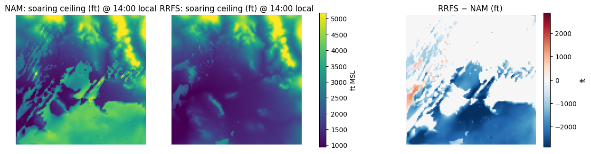
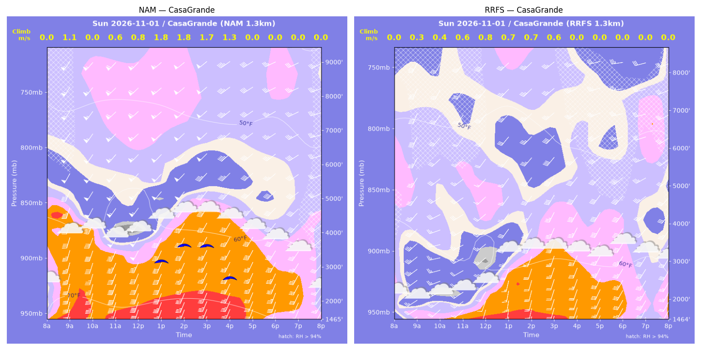
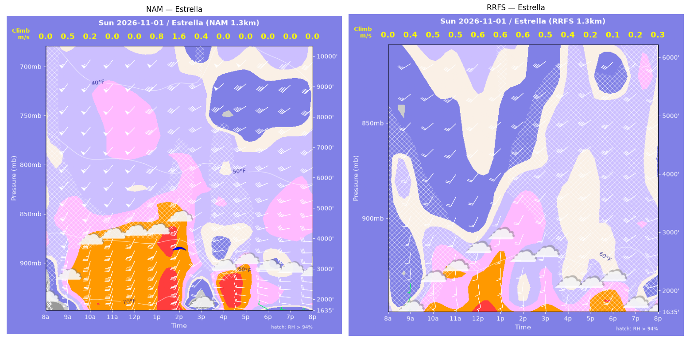
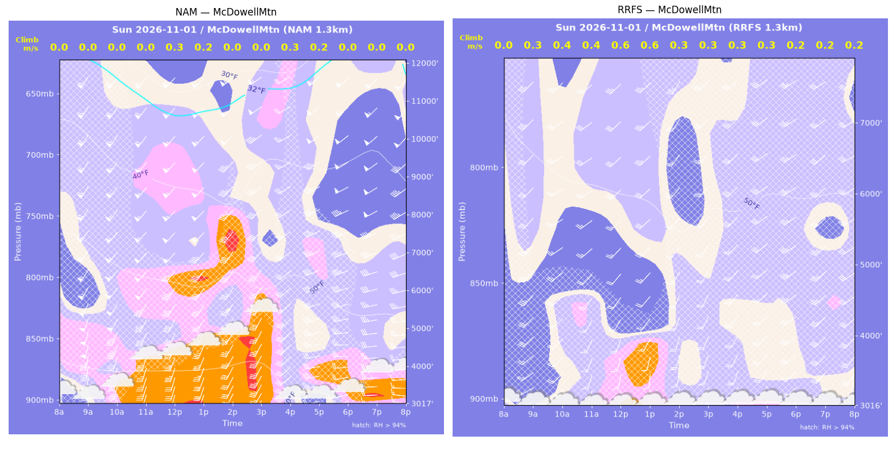
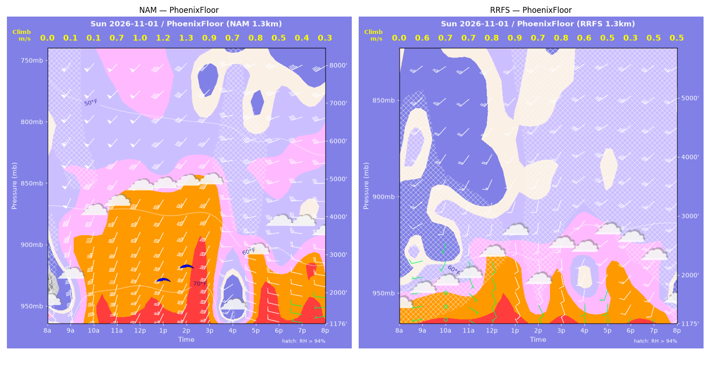
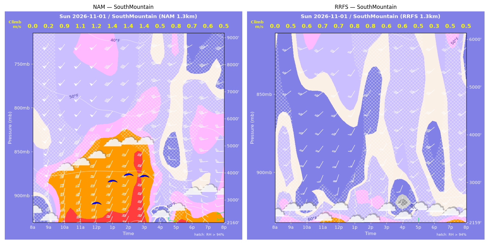
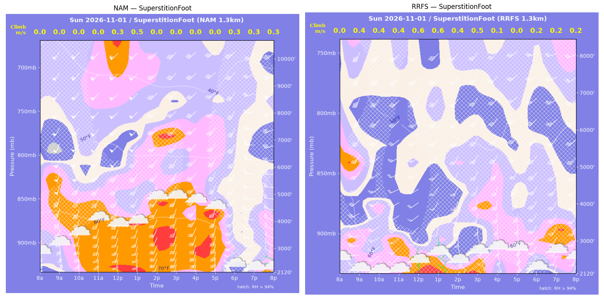
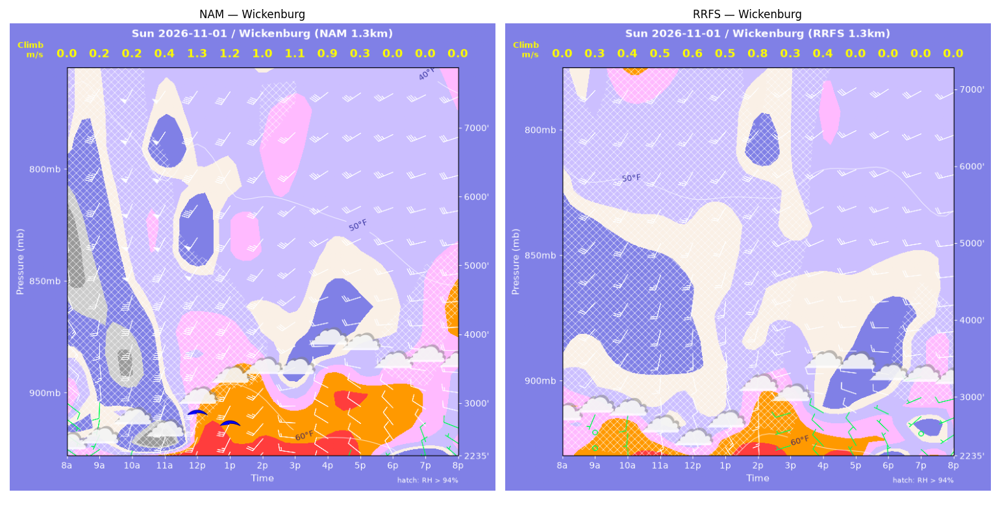

../runs/ab-phoenix-nam — model nam, cycle 2026-10-31 18z, dx 1.3333333740234374 km, 13 hours, grid 114×114../runs/ab-phoenix-rrfs — model rrfs, cycle 2026-10-31 18z, dx 1.3333333740234374 km, 13 hours, grid 114×114Grids identical; afternoon = 12:00–17:59 local (UTC-7). Δ = RRFS − NAM.
| Site | terrain ft | BL top (AGL) med|Δ| / bias (ft) | w* med|Δ| / bias (fpm) | Soaring ceiling med|Δ| / bias (ft) | BL wind speed med|Δ| / bias (kt) | BL wind dir med|Δ| / bias (deg) | 2 m temperature med|Δ| / bias (F) | Sfc LCL (AGL) med|Δ| / bias (ft) | Sensible heat flux med|Δ| / bias (W/m2) |
|---|---|---|---|---|---|---|---|---|---|
| PhoenixFloor | 1176 | 2340 / -1880 | 43 / -48 | 0 / -473 | 23 / -20 | 26 / -32 | 9 / -6 | 2166 / -1503 | 16 / -4 |
| SouthMountain | 2160 | 2835 / -2163 | 103 / -94 | 1243 / -1028 | 19 / -16 | 30 / -36 | 10 / -7 | 2304 / -1734 | 14 / -14 |
| SuperstitionFoot | 2121 | 1643 / -2292 | 52 / +52 | 0 / -0 | 15 / -15 | 35 / -30 | 8 / -8 | 1749 / -1740 | 27 / +28 |
| Estrella | 1635 | 2798 / -2521 | 57 / +4 | 0 / -351 | 23 / -20 | 25 / -33 | 5 / -5 | 1105 / -905 | 16 / -0 |
| Wickenburg | 2235 | 682 / -726 | 116 / -106 | 0 / -222 | 11 / -13 | 30 / -6 | 2 / -4 | 532 / -549 | 51 / -60 |
| CasaGrande | 1465 | 1703 / -1570 | 206 / -150 | 1519 / -1244 | 21 / -19 | 13 / -9 | 7 / -7 | 1188 / -1212 | 97 / -89 |
| McDowellMtn | 3018 | 273 / -1797 | 56 / +44 | 1 / -1 | 17 / -16 | 33 / -25 | 6 / -5 | 1303 / -1090 | 23 / +20 |
| Metric | n | median |Δ| | p90 |Δ| | bias |
|---|---|---|---|---|
| BL top (AGL) (ft) | 42 | 1546 | 4484 | -1850 |
| w* (fpm) | 42 | 65 | 184 | -42 |
| Soaring ceiling (ft) | 42 | 1 | 1807 | -474 |
| BL wind speed (kt) | 42 | 17 | 28 | -17 |
| BL wind dir (deg) | 42 | 25 | 56 | -24 |
| 2 m temperature (F) | 42 | 7 | 10 | -6 |
| Sfc LCL (AGL) (ft) | 42 | 1228 | 2326 | -1248 |
| Sensible heat flux (W/m2) | 42 | 23 | 96 | -17 |
diffmap_tol.png| local | BL top NAM/RRFS ft | w* NAM/RRFS fpm | ceiling NAM/RRFS ft | BL wind NAM/RRFS | T2 NAM/RRFS F | HFX NAM/RRFS |
|---|---|---|---|---|---|---|
| 08:00 | 0 / 0 | 0 / 0 | 1176 / 1176 | 8kt@129 / 6kt@260 | 64 / 63 | 0 / 0 |
| 09:00 | 92 / 883 | 20 / 119 | 1176 / 1176 | 19kt@164 / 7kt@258 | 71 / 64 | 1 / 29 |
| 10:00 | 511 / 1048 | 28 / 128 | 1176 / 1176 | 29kt@188 / 3kt@218 | 75 / 65 | 1 / 31 |
| 11:00 | 1760 / 998 | 139 / 135 | 1176 / 1176 | 32kt@199 / 8kt@173 | 76 / 65 | 24 / 38 |
| 12:00 | 3949 / 1553 | 198 / 165 | 1176 / 1176 | 42kt@212 / 10kt@188 | 76 / 67 | 31 / 44 |
| 13:00 | 3797 / 1513 | 243 / 178 | 2433 / 1176 | 38kt@215 / 11kt@187 | 76 / 67 | 59 / 58 |
| 14:00 | 3962 / 891 | 257 / 141 | 2753 / 1176 | 39kt@213 / 11kt@163 | 76 / 65 | 67 / 48 |
| 15:00 | 3853 / 1406 | 168 / 163 | 1176 / 1176 | 35kt@211 / 16kt@187 | 76 / 67 | 19 / 47 |
| 16:00 | 455 / 729 | 130 / 115 | 1176 / 1176 | 13kt@207 / 13kt@197 | 66 / 67 | 74 / 32 |
| 17:00 | 2136 / 782 | 152 / 100 | 1176 / 1176 | 24kt@275 / 11kt@219 | 70 / 68 | 25 / 20 |
| 18:00 | 1591 / 714 | 91 / 66 | 1176 / 1176 | 23kt@272 / 17kt@226 | 70 / 68 | 7 / 6 |
| 19:00 | 1954 / 697 | 82 / 97 | 1176 / 1176 | 22kt@281 / 15kt@207 | 69 / 67 | 4 / 20 |
| 20:00 | 1127 / 435 | 67 / 97 | 1176 / 1176 | 12kt@280 / 20kt@233 | 68 / 66 | 4 / 32 |
| local | BL top NAM/RRFS ft | w* NAM/RRFS fpm | ceiling NAM/RRFS ft | BL wind NAM/RRFS | T2 NAM/RRFS F | HFX NAM/RRFS |
|---|---|---|---|---|---|---|
| 08:00 | 0 / 0 | 0 / 0 | 2160 / 2159 | 23kt@162 / 10kt@251 | 65 / 62 | 0 / 0 |
| 09:00 | 99 / 454 | 34 / 98 | 2160 / 2159 | 24kt@164 / 12kt@210 | 66 / 62 | 6 / 32 |
| 10:00 | 2082 / 422 | 172 / 111 | 2160 / 2159 | 40kt@194 / 14kt@195 | 70 / 62 | 38 / 49 |
| 11:00 | 2317 / 687 | 215 / 140 | 2160 / 2159 | 39kt@201 / 16kt@185 | 71 / 62 | 66 / 61 |
| 12:00 | 3383 / 651 | 231 / 143 | 2997 / 2159 | 40kt@209 / 16kt@180 | 71 / 61 | 57 / 68 |
| 13:00 | 3639 / 701 | 274 / 156 | 3807 / 2159 | 41kt@213 / 14kt@180 | 71 / 61 | 88 / 82 |
| 14:00 | 3961 / 714 | 282 / 152 | 4031 / 2159 | 36kt@213 / 16kt@183 | 72 / 62 | 88 / 75 |
| 15:00 | 3865 / 540 | 280 / 117 | 3970 / 2159 | 34kt@213 / 16kt@194 | 71 / 62 | 88 / 45 |
| 16:00 | 265 / 398 | 108 / 111 | 2160 / 2159 | 19kt@195 / 15kt@189 | 64 / 61 | 72 / 52 |
| 17:00 | 1213 / 345 | 154 / 89 | 2160 / 2159 | 18kt@295 / 13kt@200 | 64 / 62 | 46 / 32 |
| 18:00 | 909 / 227 | 138 / 59 | 2160 / 2159 | 16kt@284 / 18kt@201 | 64 / 62 | 44 / 14 |
| 19:00 | 742 / 659 | 110 / 106 | 2160 / 2159 | 18kt@288 / 24kt@220 | 63 / 63 | 27 / 27 |
| 20:00 | 758 / 449 | 105 / 92 | 2160 / 2159 | 12kt@262 / 21kt@215 | 63 / 63 | 23 / 27 |
| local | BL top NAM/RRFS ft | w* NAM/RRFS fpm | ceiling NAM/RRFS ft | BL wind NAM/RRFS | T2 NAM/RRFS F | HFX NAM/RRFS |
|---|---|---|---|---|---|---|
| 08:00 | 0 / 0 | 0 / 0 | 2121 / 2120 | 17kt@164 / 10kt@182 | 67 / 66 | 0 / 0 |
| 09:00 | 4637 / 938 | 0 / 77 | 2121 / 2120 | 50kt@203 / 24kt@261 | 68 / 65 | -12 / 7 |
| 10:00 | 4976 / 533 | 0 / 74 | 2121 / 2120 | 52kt@215 / 18kt@239 | 70 / 62 | -13 / 11 |
| 11:00 | 5181 / 694 | 0 / 84 | 2121 / 2120 | 53kt@218 / 14kt@229 | 70 / 62 | -4 / 12 |
| 12:00 | 1038 / 975 | 54 / 124 | 2121 / 2120 | 25kt@194 / 10kt@218 | 69 / 61 | 1 / 28 |
| 13:00 | 1296 / 978 | 92 / 127 | 2121 / 2120 | 22kt@195 / 9kt@180 | 69 / 61 | 7 / 29 |
| 14:00 | 2170 / 489 | 0 / 85 | 2121 / 2120 | 31kt@205 / 15kt@158 | 71 / 61 | -12 / 18 |
| 15:00 | 5739 / 712 | 0 / 92 | 2121 / 2120 | 38kt@218 / 20kt@156 | 70 / 62 | -21 / 15 |
| 16:00 | 5165 / 107 | 0 / 28 | 2121 / 2120 | 37kt@222 / 14kt@145 | 70 / 63 | -21 / 2 |
| 17:00 | 4364 / 2759 | 0 / 0 | 2121 / 2120 | 38kt@209 / 32kt@203 | 68 / 64 | -32 / -4 |
| 18:00 | 209 / 251 | 55 / 39 | 2121 / 2120 | 15kt@265 / 12kt@201 | 63 / 62 | 11 / 3 |
| 19:00 | 249 / 213 | 50 / 32 | 2121 / 2120 | 14kt@223 / 10kt@193 | 62 / 62 | 6 / 2 |
| 20:00 | 446 / 235 | 57 / 44 | 2121 / 2120 | 6kt@285 / 10kt@198 | 62 / 61 | 5 / 4 |
| local | BL top NAM/RRFS ft | w* NAM/RRFS fpm | ceiling NAM/RRFS ft | BL wind NAM/RRFS | T2 NAM/RRFS F | HFX NAM/RRFS |
|---|---|---|---|---|---|---|
| 08:00 | 0 / 0 | 0 / 0 | 1635 / 1635 | 14kt@140 / 6kt@255 | 63 / 61 | 0 / 0 |
| 09:00 | 244 / 487 | 96 / 76 | 1635 / 1635 | 27kt@176 / 6kt@191 | 69 / 60 | 52 / 14 |
| 10:00 | 262 / 685 | 44 / 96 | 1635 / 1635 | 27kt@193 / 14kt@186 | 73 / 63 | 1 / 19 |
| 11:00 | 6087 / 569 | 0 / 93 | 1635 / 1635 | 52kt@220 / 13kt@187 | 72 / 64 | -12 / 20 |
| 12:00 | 6140 / 1039 | 0 / 115 | 1635 / 1635 | 50kt@224 / 15kt@200 | 72 / 65 | -4 / 21 |
| 13:00 | 3286 / 1181 | 157 / 123 | 1635 / 1635 | 40kt@211 / 14kt@192 | 72 / 65 | 14 / 22 |
| 14:00 | 4010 / 520 | 307 / 121 | 3743 / 1635 | 40kt@217 / 19kt@191 | 74 / 64 | 104 / 50 |
| 15:00 | 249 / 627 | 83 / 99 | 1635 / 1635 | 23kt@203 / 19kt@190 | 63 / 65 | 32 / 22 |
| 16:00 | 1535 / 339 | 0 / 71 | 1635 / 1635 | 24kt@266 / 16kt@200 | 67 / 63 | -6 / 15 |
| 17:00 | 3857 / 247 | 0 / 43 | 1635 / 1635 | 42kt@245 / 15kt@199 | 67 / 64 | -5 / 4 |
| 18:00 | 2937 / 245 | 0 / 24 | 1635 / 1635 | 37kt@254 / 18kt@211 | 64 / 65 | -1 / 0 |
| 19:00 | 2412 / 227 | 0 / 44 | 1635 / 1635 | 32kt@261 / 15kt@218 | 63 / 64 | -1 / 5 |
| 20:00 | 2405 / 345 | 0 / 64 | 1635 / 1635 | 30kt@265 / 20kt@253 | 62 / 62 | -0 / 11 |
| local | BL top NAM/RRFS ft | w* NAM/RRFS fpm | ceiling NAM/RRFS ft | BL wind NAM/RRFS | T2 NAM/RRFS F | HFX NAM/RRFS |
|---|---|---|---|---|---|---|
| 08:00 | 0 / 0 | 0 / 0 | 2235 / 2236 | 7kt@126 / 7kt@211 | 56 / 59 | 0 / 0 |
| 09:00 | 270 / 527 | 44 / 57 | 2235 / 2236 | 4kt@209 / 5kt@210 | 58 / 59 | 4 / 5 |
| 10:00 | 224 / 767 | 34 / 72 | 2235 / 2236 | 7kt@198 / 12kt@207 | 60 / 60 | 2 / 7 |
| 11:00 | 333 / 1542 | 71 / 106 | 2235 / 2236 | 25kt@201 / 19kt@193 | 61 / 59 | 15 / 11 |
| 12:00 | 1803 / 1540 | 265 / 109 | 2998 / 2236 | 42kt@207 / 20kt@184 | 67 / 59 | 146 / 12 |
| 13:00 | 2063 / 580 | 234 / 93 | 2807 / 2236 | 38kt@210 / 16kt@155 | 67 / 61 | 87 / 20 |
| 14:00 | 1729 / 1257 | 199 / 154 | 2235 / 2236 | 31kt@220 / 19kt@190 | 66 / 63 | 63 / 42 |
| 15:00 | 1300 / 1021 | 211 / 66 | 2235 / 2236 | 23kt@248 / 12kt@255 | 64 / 62 | 102 / 4 |
| 16:00 | 1574 / 682 | 177 / 86 | 2235 / 2236 | 18kt@268 / 8kt@299 | 63 / 62 | 48 / 13 |
| 17:00 | 1255 / 284 | 56 / 0 | 2235 / 2236 | 13kt@281 / 8kt@315 | 62 / 61 | 0 / -1 |
| 18:00 | 1262 / 500 | 0 / 0 | 2235 / 2236 | 11kt@286 / 8kt@296 | 60 / 58 | -6 / -2 |
| 19:00 | 641 / 270 | 0 / 0 | 2235 / 2236 | 9kt@318 / 2kt@175 | 59 / 59 | -5 / -1 |
| 20:00 | 754 / 83 | 0 / 0 | 2235 / 2236 | 11kt@284 / 1kt@148 | 58 / 60 | -2 / -0 |
| local | BL top NAM/RRFS ft | w* NAM/RRFS fpm | ceiling NAM/RRFS ft | BL wind NAM/RRFS | T2 NAM/RRFS F | HFX NAM/RRFS |
|---|---|---|---|---|---|---|
| 08:00 | 0 / 0 | 0 / 0 | 1465 / 1465 | 12kt@170 / 14kt@205 | 71 / 68 | 0 / 0 |
| 09:00 | 3415 / 258 | 219 / 57 | 1465 / 1465 | 45kt@199 / 19kt@237 | 75 / 65 | 44 / 10 |
| 10:00 | 2695 / 484 | 0 / 86 | 1465 / 1465 | 45kt@203 / 24kt@233 | 74 / 64 | -11 / 18 |
| 11:00 | 2108 / 648 | 120 / 123 | 1465 / 1465 | 46kt@204 / 16kt@233 | 73 / 64 | 10 / 41 |
| 12:00 | 2113 / 1057 | 166 / 149 | 1465 / 1465 | 48kt@208 / 19kt@216 | 73 / 66 | 30 / 45 |
| 13:00 | 3008 / 1522 | 350 / 145 | 3239 / 1465 | 48kt@213 / 24kt@208 | 76 / 68 | 216 / 28 |
| 14:00 | 3716 / 1797 | 359 / 140 | 3694 / 1465 | 48kt@218 / 25kt@202 | 76 / 68 | 188 / 20 |
| 15:00 | 3910 / 1856 | 329 / 121 | 3661 / 1465 | 45kt@217 / 28kt@200 | 75 / 69 | 137 / 12 |
| 16:00 | 3512 / 1207 | 248 / 0 | 2728 / 1465 | 44kt@220 / 25kt@199 | 74 / 68 | 64 / -5 |
| 17:00 | 4448 / 3851 | 0 / 0 | 1465 / 1465 | 41kt@227 / 39kt@223 | 72 / 67 | -10 / -10 |
| 18:00 | 3799 / 3603 | 0 / 0 | 1465 / 1465 | 39kt@226 / 38kt@230 | 70 / 66 | -27 / -14 |
| 19:00 | 3919 / 2675 | 0 / 0 | 1465 / 1465 | 41kt@231 / 36kt@226 | 69 / 65 | -20 / -36 |
| 20:00 | 2271 / 2735 | 0 / 0 | 1465 / 1465 | 29kt@228 / 32kt@219 | 67 / 66 | -10 / -8 |
| local | BL top NAM/RRFS ft | w* NAM/RRFS fpm | ceiling NAM/RRFS ft | BL wind NAM/RRFS | T2 NAM/RRFS F | HFX NAM/RRFS |
|---|---|---|---|---|---|---|
| 08:00 | 0 / 0 | 0 / 0 | 3018 / 3017 | 27kt@163 / 11kt@272 | 63 / 60 | 0 / 0 |
| 09:00 | 4118 / 211 | 0 / 58 | 3018 / 3017 | 56kt@213 / 19kt@250 | 63 / 59 | -8 / 13 |
| 10:00 | 4863 / 289 | 0 / 71 | 3018 / 3017 | 54kt@218 / 17kt@231 | 64 / 58 | -14 / 17 |
| 11:00 | 5439 / 312 | 0 / 71 | 3018 / 3017 | 54kt@220 / 15kt@197 | 65 / 59 | -9 / 16 |
| 12:00 | 1020 / 877 | 60 / 110 | 3018 / 3017 | 33kt@198 / 17kt@195 | 65 / 58 | -1 / 22 |
| 13:00 | 1627 / 1223 | 42 / 122 | 3018 / 3017 | 33kt@204 / 16kt@212 | 65 / 59 | -3 / 21 |
| 14:00 | 6018 / 279 | 0 / 66 | 3018 / 3017 | 45kt@222 / 15kt@185 | 66 / 58 | -19 / 14 |
| 15:00 | 4911 / 329 | 0 / 61 | 3018 / 3017 | 40kt@224 / 17kt@196 | 66 / 58 | -33 / 9 |
| 16:00 | 267 / 275 | 53 / 56 | 3018 / 3017 | 23kt@237 / 18kt@197 | 61 / 59 | 7 / 9 |
| 17:00 | 186 / 260 | 49 / 50 | 3018 / 3017 | 21kt@255 / 17kt@205 | 60 / 59 | 8 / 7 |
| 18:00 | 3912 / 215 | 0 / 46 | 3018 / 3017 | 44kt@249 / 21kt@220 | 60 / 59 | -12 / 6 |
| 19:00 | 3502 / 110 | 0 / 34 | 3018 / 3017 | 41kt@252 / 20kt@212 | 59 / 59 | -14 / 5 |
| 20:00 | 3021 / 192 | 0 / 36 | 3018 / 3017 | 36kt@256 / 26kt@206 | 58 / 60 | -11 / 3 |
montage_PhoenixFloor.pngmontage_SouthMountain.pngmontage_SuperstitionFoot.pngmontage_Estrella.pngmontage_Wickenburg.pngmontage_CasaGrande.pngmontage_McDowellMtn.png